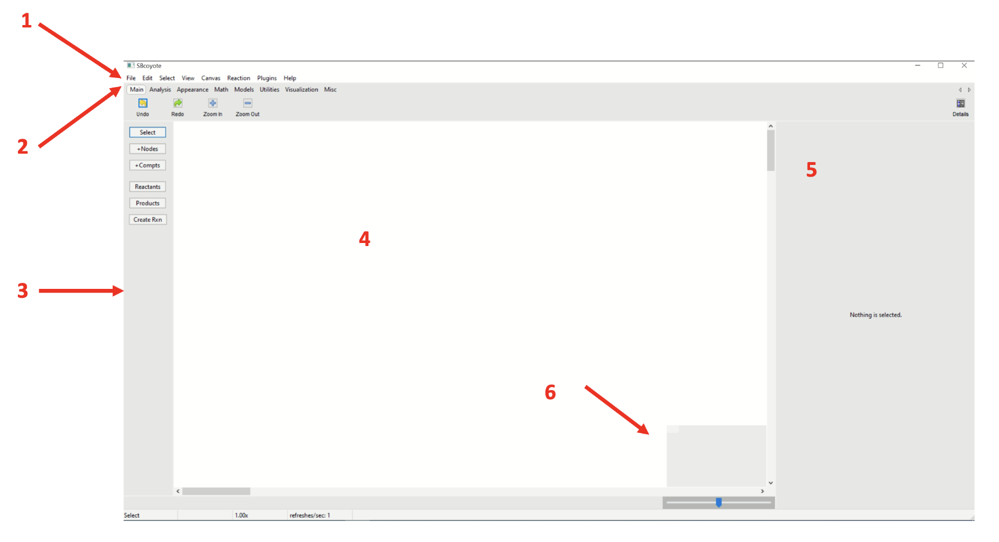
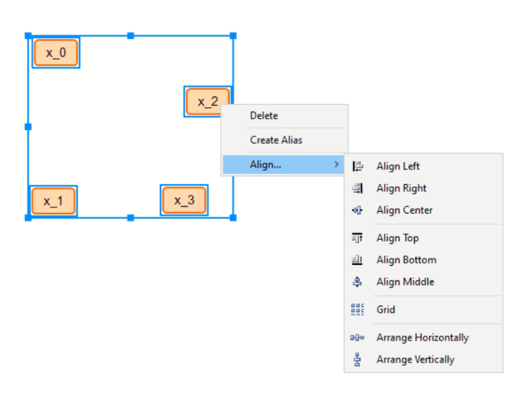
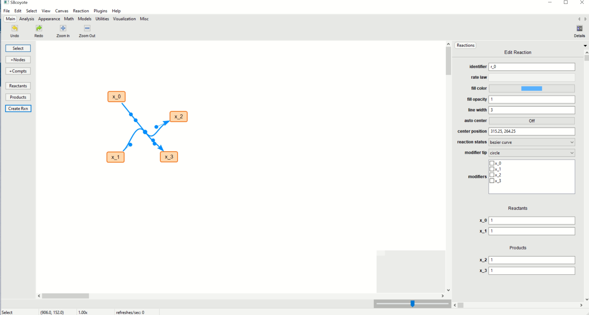
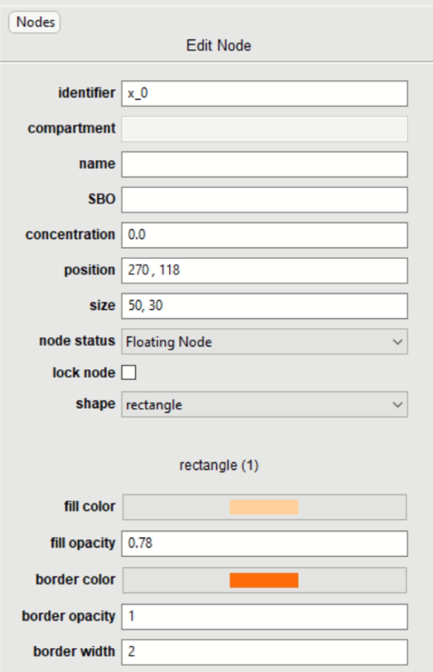
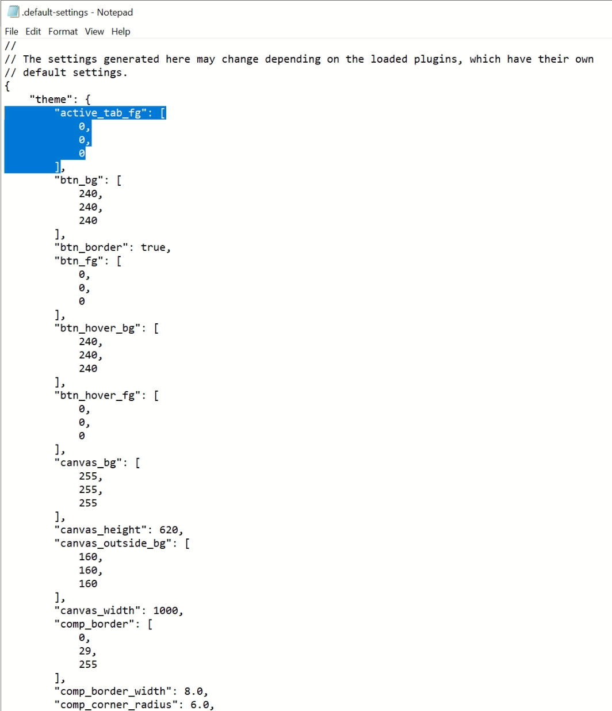
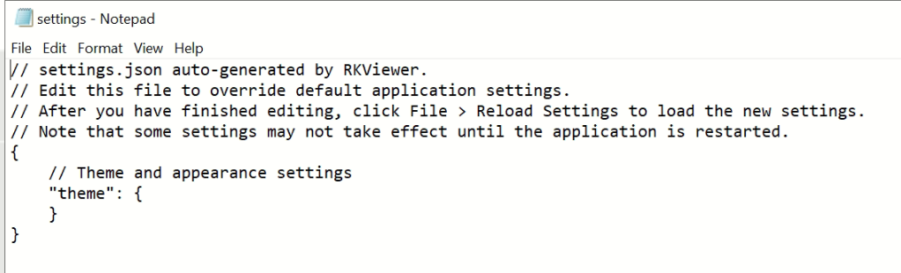

Tutorial¶
A brief guide to help you use and understand version 1.
Once you have completed all applicable steps in Quick Start run the application and wait for it to open. The main window will pop up and look like the following: Follow the steps in Quick Start to install and run SBCoyote. When the application starts the first thing you will see is the main window below.
(Figure 1)
{kind=link}
{kind=link}
3. Creation Panel¶
This panel allows you to select and create nodes and reactions. This is the basic command center for building your networks.
The select button allows you to choose nodes that are already in the canvas.
Selecting +Nodes will let you click anywhere on the canvas where you want a node to be. These nodes are movable.
+Compt will allow you to create compartments in which you can add nodes and reactions.
Reactants will denote the selected nodes as reactants. To create a reaction with multiple reactants, click Select and maintain Ctrl in your keyboard pressed to select multiple.
Products will denote the selected nodes as products. To create a reaction with multiple products, click Select and maintain Ctrl in your keyboard pressed to select multiple.
Create Rxn will let you create reactions AFTER you have selected one or more nodes as reactants and one or more nodes as products. You can move the centers of the reaction to look as you desire.
Note: you will note be able to delete a node that is in a reaction.
4. Canvas¶
This is your visual workspace. Here you will be able to see your created nodes, compartments and reactions. You can move freely through the canvas as well as move nodes and reactions at your will.
You can right click on a node or on a selection of nodes to delete the selection. You also have an align option: This will let you align a set or nodes in the manners described.
(Figure 4)
Align Left will align nodes vertically to be at the level of the left-most node among all the selected nodes.
Align Right will align nodes vertically to be at the level of the right-most node among all the selected nodes.
Align Center will align nodes vertically to be at the level of the horizontal center node among all the selected nodes.
Align Top will align nodes horizontally to be at the level of the top node among all the selected nodes.
Align Bottom will align nodes horizontally to be at the level of the bottom node among all the selected nodes.
Align Middle will align nodes horizontally to be at the level of the vertical center node among all the selected nodes.
Grid will create a grid view of all the nodes.
Arrange Horizontally will arrange all nodes so that they are evenly spaced out horizontally along the x position of the center of all the nodes.
Arrange Vertically will arrange all nodes so that they are evenly spaced out vertically along the y position of the center of all the nodes.
5. Information Panel¶
This is key to personalizing your nodes and reactions. Through this panel you will be able to add information to and about your networks. NOTE: The information panel will only show when something is selected (nodes, reactions, or compartments).
(Figure 5)
You will modify independently the reactions selected and the nodes selected.
- Nodes: Let’s go over the case where you select a single node. You can adjust settings for multiple nodes at once but some of the features are locked, like identifier, to avoid internal conflict.
{kind=link}
(Figure 6)
Identifiers: This allows you to change the name of the node in question. E.g. say we want to name it H, we type H into the box.
Compartment: The compartment, if any, where the node is in.
Name: Node name in the annotation.
SBO: Node SBO in the annotation, with the expected format as “SBO:0000247”.
Concentration: Species concentration.
Position: This helps you select exactly what canvas coordinate you want the node to be in. Note: the top left corner is the position (0,0).
Size: This lets you modify the node’s size, it is coherent with the canvas coordinate system.
Node status: Lets you identify a node as floating or border. This comes with a double border, to help you identify this type of node at a glance.
Lock node: When this box is clicked, it indicates that the node is not to be moved. The program will not let you (or other utilities) drag or move this node. You will see a circle appear at the top left of your node to help you identify locked nodes at a glance.
Shape: Node shape including rectangle, circle, hexagon, line, triangle, text-only, etc.
Fill color, fill opacity, border color, border opacity, border width: You can customize these values to your own taste. Note: if you want to change all of the nodes to a specific color you can select all and modify accordingly, you don’t need to go one by one.
Here is an example of some of the values being changed and the end result (in contrast to the default values).
(Figure 7)
- Reactions: Each case will be very unique, let’s go over a simple scenario.
(Figure 8)
Identifier: the reaction’s name.
Rate law: you can specify if any applies. I left this empty since it is irrelevant to our simple example.
Fill color, fill opacity, line width: the color and appearance of the curve of the reaction. I chose red, the default is light blue. You won’t be able to see the change until you have stopped selecting. If you choose an opacity of 0 you will not be able to see the reaction.
Auto Center position: if checked, it will automatically move the center circle to its default position. If not clicked you may move it manually or assign it a coordinate position.
Reaction status: Straight line will make your reaction have simple straight lines, whereas bezier curve will calculate and draw the modifiable bezier curve. On the canvas you can move the handles around to get the exact visuals that you like.
Modifier tip: you can have the modifier’s tip to be circle or flat.
Modifiers: this lets you select which of all of the existing nodes in the canvas, in our out of the reaction, to be modifiers of the reaction you are modifying. They will be represented by a fine lilac line with the chosen tip. They will automatically move when the reactions or nodes involved are moved.
Reactants and products lets you state how many of each you have. It is also a good overview of the reaction when it gets complicated.
6. Zoom Control¶
You can visualize the location of your nodes on the little square, and scroll through the bar to zoom in or out.
7. Theme For Developers¶
Follow the steps below to use SBCoyote in Dark Mode.

Select Help in the Navigation Bar.
Select Default Settings.
Copy the setting(s) that you wish to change.
(Figure 9)
Click File in the Navigation Bar
Select Edit Settings
Paste the copied settings to change.
Change the values accordingly.
(Figure 10)

Close both NotePads and Select File again. (Click save if you haven’t already saved them).
Click Reload Settings or simply exit the application and open it again.
To restore default settings simple erase all changes made under File -> Edit Settings so that it looks like the following:
(Figure 11)